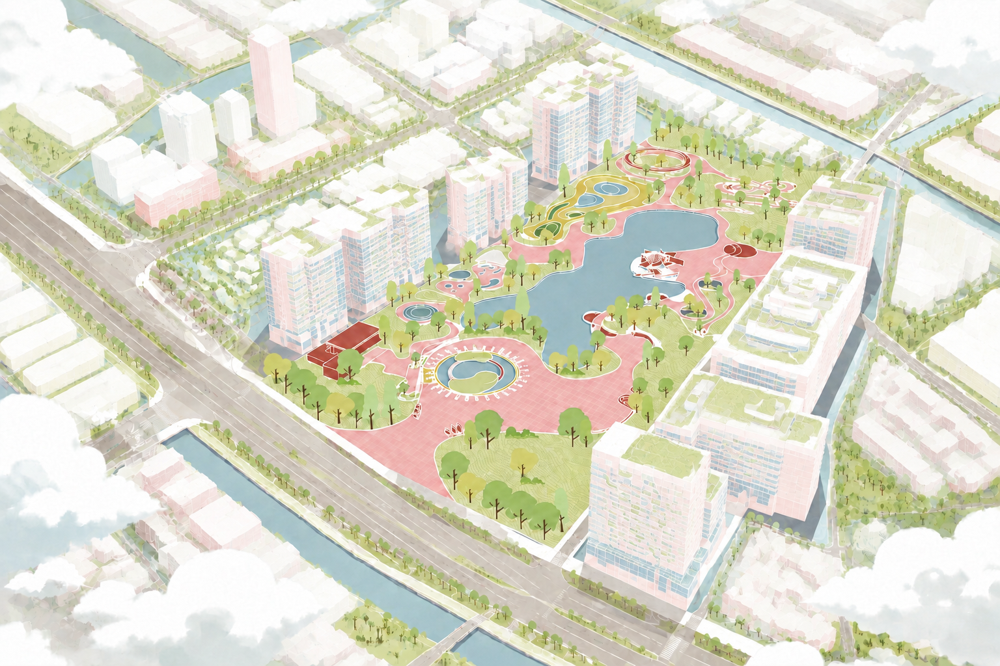
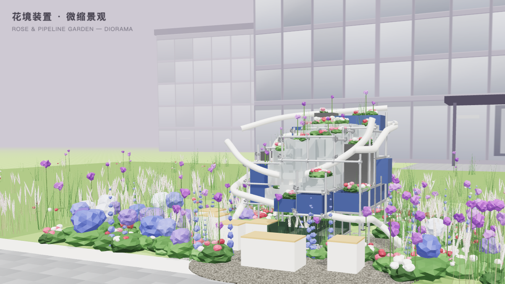

2026 · SPATIAL INTELLIGENCE
黄埔公园 AI 游园与三维导览
将“带老人慢慢走、想看水景”等自然语言需求转化为时间、无障碍与景观偏好等空间约束，再由道路网络生成可行路线，实现二维地图与手机端三维预演联动。
WELCOME TO MY FIELD NOTES
华南农业大学林学与风景园林学院园林专业本科生。我的学习与实践从园林规划设计、植物造景和工程建造出发，参与过社区花园、景观艺术装置、自然教育与规划设计实践。近年来，我也在尝试用交互式三维和 AI 工具拓展空间表达与公共空间体验。
从园林设计延伸出的交互实践

↗将“带老人慢慢走、想看水景”等自然语言需求转化为时间、无障碍与景观偏好等空间约束，再由道路网络生成可行路线，实现二维地图与手机端三维预演联动。

↗从已落地的花境装置出发，将 SketchUp / OBJ 设计模型转化为网页端实时场景，加入程序化植物、昼夜光照、人物活动与办公园区环境。
完整方案、空间表达与落地实践
立足园林专业，保持跨学科探索
关注场地、植物、生态与人的使用需求，重视从方案表达走向真实建造。
将自然知识转化为课程、手册和活动，关注儿童与社区在公共空间中的体验。
尝试用三维交互、路线计算和 AI 辅助工具拓展园林设计的表达与分析方式。
“希望在扎实的园林设计基础上，继续探索数字技术如何帮助我们更好地理解、表达和改善真实空间。”
完整履历与联系方式
查看我的教育背景、研究项目、竞赛经历、社会实践、学生工作、实习经历与联系方式。